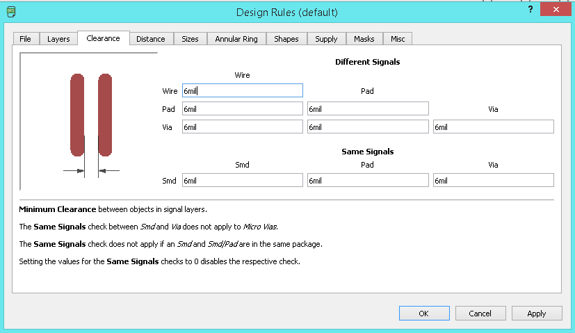
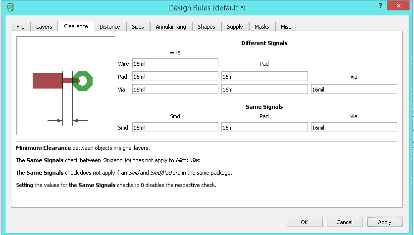
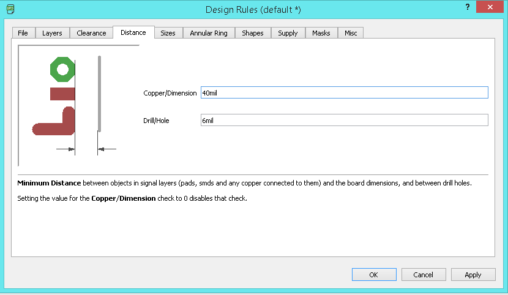
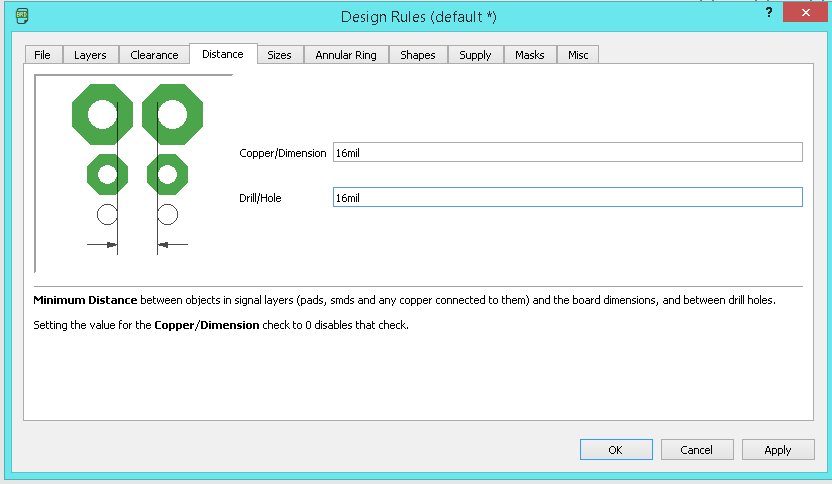
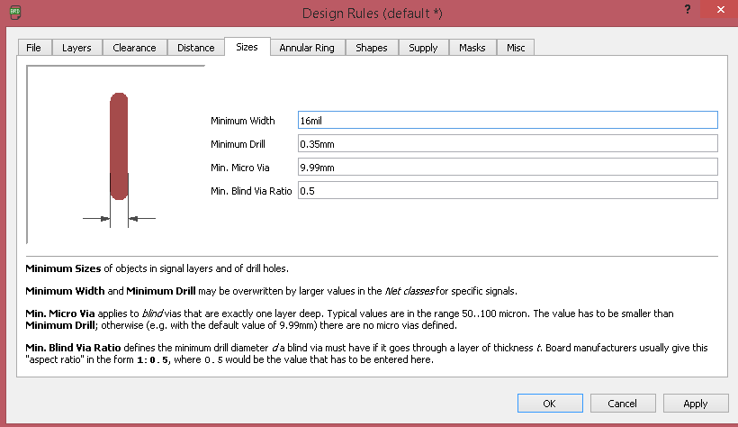
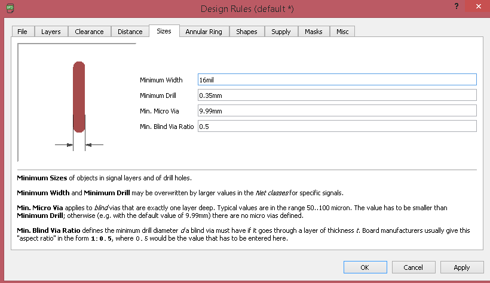
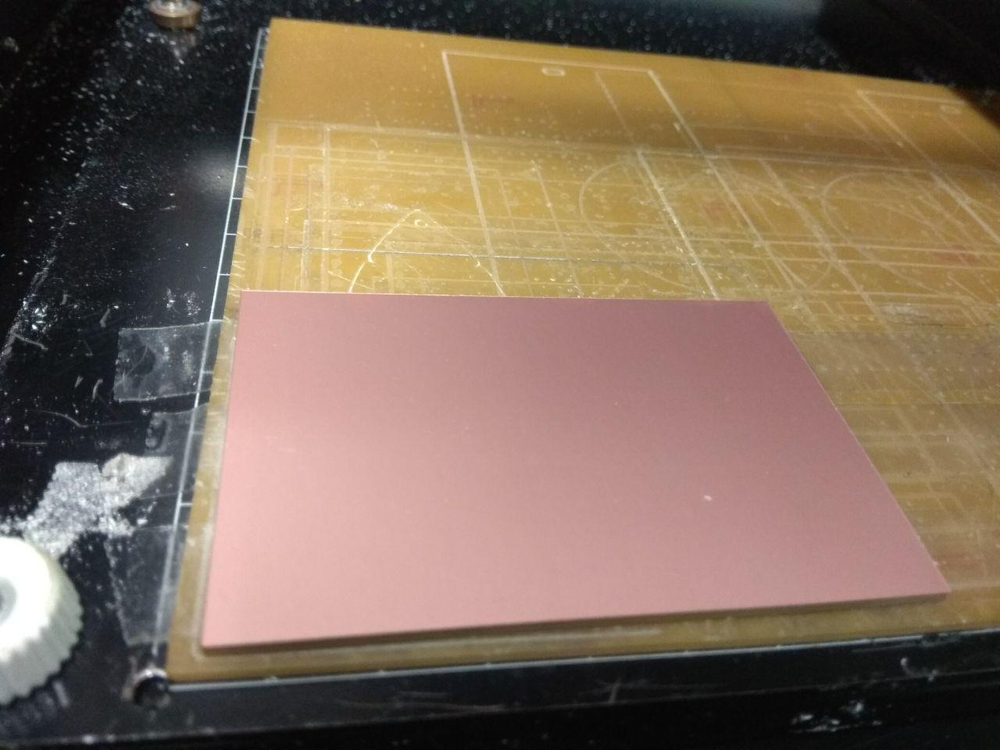
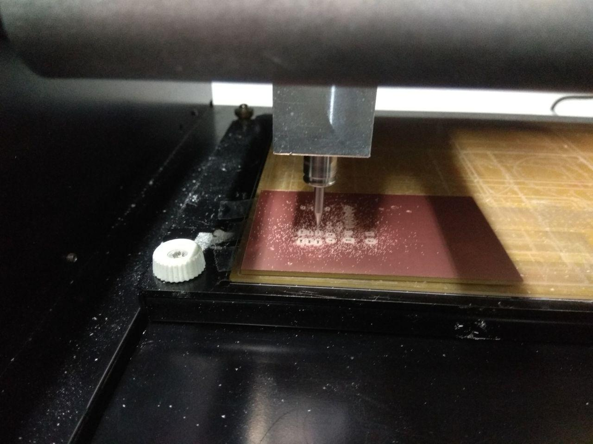
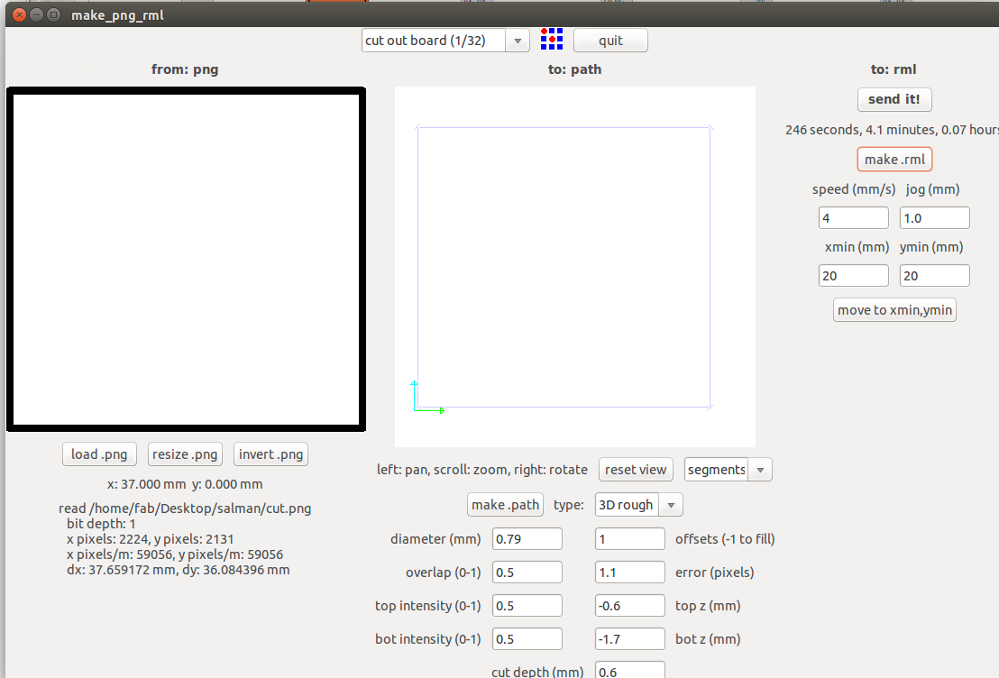

- redraw the echo hello-world board,add (at least) a button and LED (with current-limiting resistor) check the design rules, make it, and test it
- use the test equipment in your lab to observe the operation of a microcontroller circuit board
Introduction
I have some experinece working with microcontroller's and also This week Professor Neil gave us a over-all Introduction about basic electroincs and Design . In this week wee need to redraw Echo hello-world not just clone it wee need to add button's and led's our own. Am very excited .
Echo Board

We need to redraw the Echo Board and also need to add a button and led.This Board is powerd by An Atmel ATtiny44.
PCB Designing
Autodesk Eagle
EAGLE (Easily Applicable Graphical Layout Editor) is a flexible and expandable EDA schematic capture, PCB layout, autorouter and CAM program. EAGLE is popular among hobbyists because of its freeware license and rich availability of component libraries on the web.
I have littile bit experinece with eagle so i choosed eagle to design the board , i also have the student licence .
Componets we need
- ATtiny44 x 1
- XTAL 20HZ x 1
- Resistor 10K x 2
- Resistor 99ohm x 1
- Capacitor 10uf x 1
- Push button x 1
- ISP header x 1
- FTDI header x1
First of all i need to add the library of the componets , in here we have a git repo that include almost all the library that used in fablab.

there is no download option for single file github , so i choosed View Raw to get all the code.
This is acutally a XML file that describe the dimmension of the componets.then i copy all the code and created a file named fab.lbr and pasted there.
here you can downlaod the Fab Library fab.lbr
I started with creating a Project in Eagle
Login with with your account will help you to keep upadate your projects and libray in other machines too.
Created a project by File => New => Project
After the Project creation wee need to create a Schematic Board layout.
After i added library on the eagle.
First open Library manager .
On the following window click Browse then select our Library file from it's location and click open.
Next we needed to update the library by clicking the Update all option.
We need to check that the library is updated or not , but seaching the componets list.
Type add on the command Section to add componets to our Schematics.
if we updated the library we can see like this , this means we are updated the library.
Now eagle setup is complete , we can now add componets to schematic.
First i added ATtiny44, importent :- you need to selecet the right componet that you have in your inventory beacsue each of them look similar in schematic but when comes to pad length and distance and footprints it's huge difference.
place it anywhere on the schematics you like.
Next,i added the Resistor and Diode
added and Placed all the necessary componets .
Next we need to connect the componet each other.
I used label tool label my componets so i can easly connect them together.
When your are lable the same name with other componet , we get a pop-up Warning window show's the connection,and it will internally connect
First i draw the basic Echo-board and next i additinaly added an LED and Push Button , on the PCB
Button part
In the button Section i added a Pull-down resistor , without the pull-down resistor we can't get the acutal value of the button.

In my schematic R2 is one pull-down to groud.
LED part
Completed Schematic

next i need to make the PCB board , i can be Genrate by Clicking SCH BRD icon on the eagle tool bar.
continue with following pop-up window.
eagle will open new window for the Board layout.
before set the PCB we need to change some defult settigs
PCB Designing Rules
Before routing the board, the most important step you have to do is set the Design rules. The design rules relate to the trace width, the clearance between the traces etc. you can open Design rules from the toolbar => Edit => Designing rules

Open the designing rules.
First we need to set the Clearnce , in default it' comes with the 6 mil in here fab we are using 1/64 bit for milling so here the trace will come around 16 mill.
Next we need to take care the Distance ,it default value is 40 mil so in here i set the value to corresponding to our bit that is 16 mil.
 Next we need to set the Size of the Copper Trace , in dafult 6mil, and we need to make it 16 mil.
 

I also used the ERC- Electronic rule checker
in here we can see , there is no error in my design , but have few warnnings , that's due to i did't give the proper value to componets.this is not big deal if the footprint is same. we can approve all now.
So now set the all the design rules we need to create the PCB board using the Modela Milling machine.
PCB Board
We need to place the componets to place
I used Auto-router to Route my PCB Trace Line
In default it's comes with Bottom and Top layer , but here we are using One layer so used Top layer only.
Auto-route will suggest somany routes , we can choose one that's suitable us.
I used the first 100% Routed one.
Now we need to export the mill trace and cut trace in .png format.
I used the Layer tool and make the top layer visible and hide all other layers.because we only need to mill the trace/path .
I export image by File => Image.
next we need to export the cut trace, so in my lab we are using 1/32 so we need to make the cut width to 32 mil.
Now we are completed
Trace and Cut Image
PCB Milling
I explaind about the PCB milling procedure in the Week5 :- Electronics Production . same as here , am using Modela MDX for milling the PCB.
I used the Fab Modules with Modela to mill PCB.for milling i used 1/64 bit.
I used single sided FR-grade PCB .
Milling Started
Next i need to cut out the Trace , for cutting the trace i used 1/32 bit.
Soldering
First i soldered ATtiny44 Microcontoller.
Then soldered one by one.
Hero Shot
Arduino Progarming
I have experience in Arduino development , so i progarmmed the Hello-Echo board with Arduino IDE. Arduino C is simple and easy to learn.
Arduino Code
int led = PA3;
void setup()
{
pinMode(led,OUTPUT);
}
void loop()
{
digitalWrite(led,HIGH);
delay(1000);
digitalWrite(led,LOW);
delay(1000);
}
It's a simple Arduino blink progarmme.
Lab Test Equipments
Multimeter
A digital multimeter is a test tool used to measure two or more electrical values—principally voltage (volts), current (amps) and resistance (ohms). It is a standard diagnostic tool for technicians in the electrical/electronic industries.
I used multimeter to check my PCB continuity to ensure all the connection is connected Perfectly.
DC Power Supply
In Fablab koch we have Gwinstek GPD-3303D
The Instek GPD-3303D 3-Channel Programmable Linear DC Power Supply, 195W, 100mV/10mA .
- Tracking Series and Parallel Function
- Convenience Functions
- 4 Sets of Save/Recall
- USB Remote Control
Tracking series and parallel function allows you to use the GPD-3303D in a wide range of applications. The tracking series mode guarantees higher output voltage, while the tracking parallel mode guarantees higher output current.
The GPD3303D knobs are digitally controlled, allowing for fine or coarse volume settings. The key lock feature locks panel operations, preventing accidental settings changes, which might damage the equipment.
The GPD-3303D can save and recall panel settings; quickly select a panel setting from the four memory sets without the need for manual configuration.
The USB device port in the GPD3303D allows you to remotely control the power supply according to your application needs.
I used GPD-3303D to power my PCB and Checked wether my LED connections are correct
Remark! Though we changed the voltage and current we have to press the output button to get the output in terminals.
Digital Oscilloscope
When we are deeling with timing and signal shapes a simple multimeter became insufficent. We need to have something more to visualize and compare the signal. A digital storage oscilloscope is an apt choise for this.The DSO in our lap has the following capabilities.
- 100 MHz bandwidth, 1 M Memory
- High resolution color LCD display
- USB storage, RS232C and J45 interface
- 4000 point record length for each channel
- Multi-waveforms math, FFT Function
- Built-in delay sweep function
- Automatic Multi-waveform Measurement
- Cursor and Track measurement
- Waveform Record and Recall, Trigger Mode for Edge, Video, Pulse Width, Slope and Alternate
- Display of date, clock and help information
- Also available in 60 MHz DS-1065, 100 MHz DS-1200
I tested ATtiny44 Pulse Width Modulation with the Oscilloscope
Function generator
The AFG-2100/2000 Series Arbitrary Function Generator is a DDS (Direct Digital Synthesized) based signal generato.It can generate output of Sine, Square (Pulse), Ramp (Triangle), Noise and Arbitrary waveforms. It provides 20M Sa/s sampling rate, 10 bit vertical resolution and 4k point memory .Also it can generate 0.1Hz resolution of Sine, Square and Triangle waveforms and the 1% ~ 99% adjustable duty cycle of Square (Pulse) waveform
We connected the out put of the function generator to the DSO and observed the variation of signal with change in different parameters. here also we have to press the output buttion to get the output signal.
{kind=link}
{kind=link}